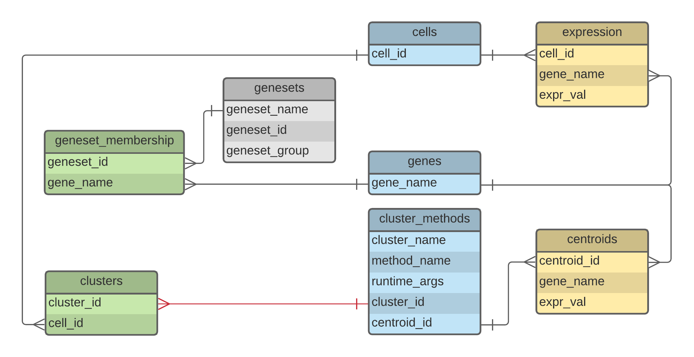

Chapter 1 - Data Domain
Overview
Single-cell RNA sequencing data
Chapter 2 - PostgreSQL DB
Overview
This chapter discusses xhcaDB--a reference PostgreSQL database for XHCA data.
This database is designed and implemented from scratch, to analyze single-cell expression data.
This work is done in coordination with Josh Stuart's lab, specifically with
Bianca Xue, Hongxu Ding, and Josh Stuart.
Due to this effort being done on our own for prototyping and learning, it is possible that some research will need to be done on existing databases that address similar use cases. For timing reasons and the need to have infrastructure that we fully control and understand, we are choosing this route.
This database is intended to be both:
- A reference implementation
- A baseline for future performance benchmarks
Database Schema
Our schema contains 6 entities (shown in the ERD diagram, below) which represent the core logical entities of XHCA data and their relationships.

The ERD diagram has some color coding for convenience:
- Blue entities are primary entities (have no foreign keys)
- Green entities are used for set membership
genesetsrepresent sets of genesclustersrepresent sets of cells
- Yellow entities are logically identical matrices for core expression data
expressionrepresents a matrix of values for eachcelland eachgenecentroidsrepresents a matrix of values for eachclusterand eachgene, where acentroidis essentially a representative cell for the cluster.
- Red relationships are logical constraints rather than physical, meaning they are not defined as
foreign key constraints in the DDL.
- We want to support a one-to-many relationship between clusters and centroids: a cluster may have many centroids, but each centroid can only be associated with one cluster
- In
cluster_methods, eachcentroid_idis unique, butcluster_idmay be duplicated
NOTE:
Genesets is currently grey, but I think it will be made green to reflect that it is metadata for
tuples in the geneset_membership entity. It's closest equivalent is cluster_methods, as it
represents groups of genes in a way that metadata can be attached (e.g. geneset_group). It is
not yet clear that it is a core entity, though it seems likely to become one.
SQL Queries
There are a variety of queries that represent the analysis use cases we want to satisfy. We can broadly categorize these into the following types of queries, where many just refers to more than one (e.g. 2 is "many"):
- scan (selection only)
- filtration (includes many predicates in
whereclause) - projection (projects a proper subset of columns)
- aggregation (includes many aggregation operations)
The first use case, scan, may not be very interesting since there are very few ways of speeding it up. However, I list it here (until there is reason to remove it) so that we can consider the throughput of data access for various storage architectures and devices.
We expect the common case for single-cell expression analysis to consist of some mix of the remaining use cases.
DBMS Tuning
References to curate later:
Foreign Tables
References to curate later:
- Skyhook foreign tables
- PostgreSQL FDW docs
- PostgreSQL Foreign Table
- Arrow FDW for PG-strom
- Table Partitioning
Storage systems
Overview and Background
ZFS
Here's a blog I've been using a long time to understand ZFS: pthree - ZFS administration.
Here are some concise term definitions for convenience:
- mountpoint
- pool
The commands used to interact with zfs are: zfs and zpool.
References to curate later:
- OpenZFS - Workload Tuning
- ZFS on ArchLinux
- Ars Technica - ZFS storage
- pthree Blog - ZFS Administration
Code and Repositories
xhcaDB
The repository xhcadb is checked out to:
${zfs-datadir}/code/xhcadb
The repository layout is (roughly) as follows:
>> tree -L 1 -C
.
├── poetry.lock
├── pyproject.toml
├── README.md
├── R
├── resources
├── shell-scripts
├── sql
├── tests
├── toolbox
└── xhcadb
7 directories, 3 files
Shell scripts
The shell-scripts directory is a bit chaotic, but has the following layout:
>> tree -L 1 -C
.
├── convert-simulated-data.fish
├── extract
├── infrastructure
├── load
├── perf
└── transform
5 directories, 5 files
All shell scripts have an appropriate shebang to be explicit, but I have coalesced automation scripts on bash shell (instead of fish shell).
Extract, transform, and load functions (ETL).
Database and schema creation. The bash script infrastructure/create-xhcadb will complete 3
tasks to create the database and define the database schema: (1) drop the database if it exists,
(2) create the database, and (3) use psql to run sql/ddl/create_schema.sql.
Dataset loading. A dataset represents a gene expression matrix and consists of three types of
data: (1) cell metadata, (2) gene metadata, and (3) gene expression matrix data. The MTX file
format contains a file for each of these data types, whereas database bulk load
utilities tend to best support a single TSV (tab-separated values) per schema. Dataset loading
assumes that the data has already been extracted into a bulk-loadable TSV format, and the
appropriate directory is checked for the file. The load/load-datasets bash script implements
logic for loading datasets by calling load/pgsql-copy.genes, load/pgsql-copy.cells-clusters,
and load/pgsql-copy.expression scripts. Because these data types are loaded into separate tables,
the only requirement (assuming foreign keys are enabled) is to load gene and cell metadata before
expression data. If all foreign keys are disabled at the time of load, then this constraint is not
enforced.
Top-level Scripts. There are a few scripts that provide functionality by calling other scripts.
The important "top-level" scripts include: create-xhcadb.fish and load/load-datasets. When
using bash, load/load-datasets loads cell annotations, gene annotations, and expression matrix
data for a dataset into an existing database. To create a database from scratch, use the
infrastructure/db.create.bash script which takes a database name and runs: (1) dropdb (if db
exists), (2) createdb, and (3) create schema (psql ... < sql/create_schema.sql). Note that the
schema load step directly runs a SQL script against the database, rather than invoking another
shell script.
create-xhcadb.fish should illustrate how to create the database and load it. Note that I have not setup the database server yet, and the extract, transform, load, and insfrastructure directories have bash scripts instead of fish scripts.
simulated-data/ has only 1 dataset (which I am calling "538-celltypes"), but there are various directories and file formats that are produced/used by the ETL process
toolbox/ will contain scripts or binaries, and at the moment has a bash script I use to help manage my local postgres databases, "experimentdb"
This script needs to be adapted for the cloudlab machine
the "bulk load" format are just simple TSVs but they're formatted to be loadable using COPY
I have postgresql 13 installed, cuz my home computer is archlinux (rolling releases)
I use pyenv to manage python interpreters. I am installing 3.9.1 right now and will install 3.7.3 afterwards
I use poetry for dependency management. I have heard it's just okay, but I haven't decided to switch to anything else yet.
I have installed Fish shell (in case you use it), but I will be trying to have shell scripts written in bash so that you don't have to learn fish (plus I'm used to scripting in bash now).
Sample Data
You can actually play around with some of the loading scripts and use the data in the resources directory: https://gitlab.com/xhca/xhcadb/-/tree/develop/resources/simulated-data
Note that the data in that directory is checked in using git LFS. I just tried doing a fresh checkout, and it'll automatically checkout those files from LFS. If you need to re-download a file from LFS you can retrieve it with
git lfs checkout -- <file>
and as long as you aren't adding any other files to LFS you probably don't need to know any other commands. Otherwise, docs here if you're interested: https://www.mankier.com/package/git-lfs
Experimental Setup
Data Locations
The top-level directory, which is also the mountpoint for the ZFS pool, is experimentdata:
/experimentdata. Later in this documentation, we refer to this directory location as
${zfs-datadir}.
Section 2
I also created the user disorderly_guest, and you should be able to connect using:
psql -hlocalhost xhca
The database name is xhca, and I granted all privileges to disorderly_guest:
GRANT ALL ON DATABASE xhca TO disorderly_guest;
The owner is my user (akmontan) and you can see in the experimentdb script that I switch to the "postgres" user to issue DB admin commands (pg_ctl
The cloudlab server has ~120G of RAM and 32 processors. If you aren't totally comfortable with linux, here are some convenient commands you can check out:
- free
- nproc
- lsblk (I typically use -a)
- zpool (e.g.
zpool listandzpool status <pool name> - zfs
- gdisk
- ls /dev/disk (this directory has symlinks to each device using a variety of symlink names, such as UUID, filesystem label, etc.)
Section 4
Cloudlab servers are leased for a default of 16 hours, and typically you don't want to extend them much more than a week.
Whenever you want to try playing around with cloudlab, you can signup and request to join project "Skyhook". Once you get through all of that, you should be able to access a project profile I setup called "psql-test". A profile is basically a hardware configuration.
We tend to use Ubuntu 18.04 (I think) for our images, and so cloudlab servers are booted as a fresh install of that image. From there, everything has to be setup (e.g. postgres server, formatting hard drives, etc.). I have some installers I wrote for my own convenience, which can be found in my config repo (cloudlab branch). Specifically, here's a small script to install postgres: https://github.com/drin/configs/blob/cloudlab/installers/install-postgres.ubuntu
optionally, here are some other scripts I use for my own environment setup: https://github.com/drin/configs/blob/cloudlab/installers/install-tools.bash https://github.com/drin/configs/blob/cloudlab/installers/setup-environment.bash https://github.com/drin/configs/blob/cloudlab/installers/install-vim-plugins.bash
it's easiest to clone the whole repository, set CONFIG_ROOT to where you cloned the repository, and then run any of those scripts with bash <script> (except the vim plugins one, which must be run as bash install-vim-plugins.bash setup). You don't have to use these scripts, but feel free to use them for reference.
I think otherwise, you can reference my previous emails for how I setup the cloudlab server before (paths and stuff) and try to set it up similarly.
If you want to try setting up ZFS, you can use this script for reference: https://gitlab.com/xhca/xhcadb/-/blob/mainline/shell-scripts/infrastructure/zfs.create.bash.